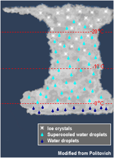
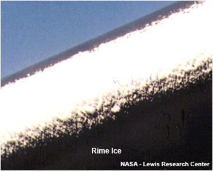
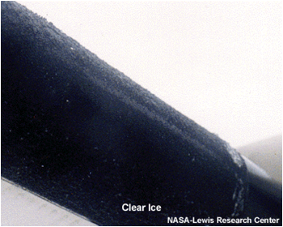
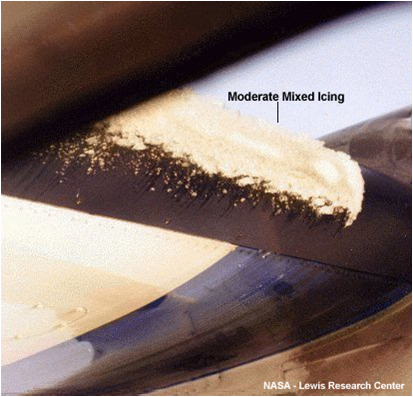
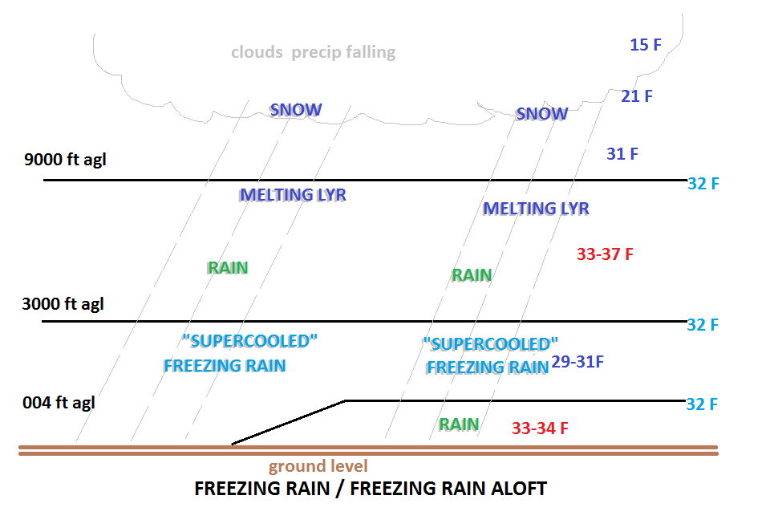
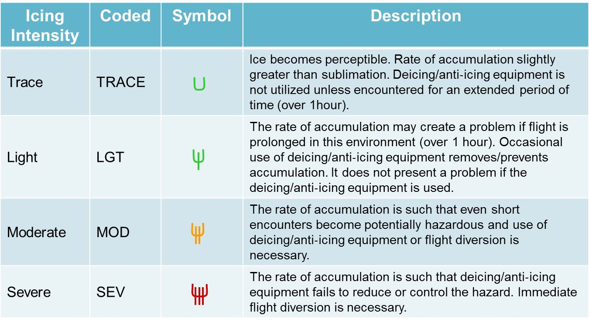

Severe thunderstorms capable of large hail and damaging wind gusts are forecast to impact the central Plains into the Lower Missouri Valley through this afternoon. Dangerous heat persists across the southern Plains, Southeast U.S. and Puerto Rico this week, and will return to the Southwest today. Read More >
| Return to Safety Homepage |
Icing
|
Icing can occur if an airplane passes through a cloud when the air temperature is at or below freezing. This can happen during widespread rain, scattered showers, or even in a thunderstorm.
This is hazardous to flight because it can increase drag and weight on the aircraft and also decrease lift. All of these effects can degrade the ability of the aircraft to maintain altitude. |
 |
Common Types of Icing
 |
Rime Icing occurs when tiny supercooled water droplets freeze onto a surface that is below freezing (typically an airplane wing or pitot tube). This tends to be nuisance rime that becomes a rough surface, although accumulation on the pitot tube can lead to instrument failure. It is the most common type of icing. |
 |
Clear Icing occurs as a result of Supercooled Large Drops (SLD) in a cloud. These are large raindrops that have cooled to below 0ºC, but are still liquid. When they come into contact with a solid object (like an airplane wing), they can accumulate rapidly as large sheets of ice. This can be very hazardous because they can disrupt the air flow and reduce lift on an aircraft. More importantly, it can spread beyond the reach of de-icing equipment on the aircraft and can be difficult for a pilot to see. |
 |
Mixed Icing is when both clear and rime ice occur at the same time. |
Other Types of Icing
 |
Freezing Rain: Icing can also occur when a plane is on or near the ground, as a result of freezing rain. During the winter season, the atmosphere can set up such that a warm layer (about 38ºF/3ºC and about 5000ft thick) can ride over top of a shallow cold layer (30ºF/-1ºC and 3000ft thick) near the ground. This creates a very strong inversion. Ice crystals forming in the upper atmosphere fall through through the warm layer and melt to become liquid. Finally, the liquid falls through the cold temperatures and re-freezes on contact with surfaces on the ground (such as an airplane wing). |
| High-Altitude Ice Crystals This rare type of ice can be hazardous if ingested at high altitudes. It usually occurs in or near convective weather, such as thunderstorms, in a tropical environment at high altitudes (FL250-FL350). Unlike supercooled drops or droplets, ice crystals do not accumulate on the airframe. Rather, they can partially melt and stick to relatively warm internal engine surfaces. This can cause engine flameouts, a surge (and subsequent stall), or engine damage. If it occurs, it should be reported as "ice crystal icing", so as not to be confused with typical ice accumulation. (Video courtesy of NASA Glenn Research Center) |
Icing Intensity
There are varying intensities of icing. If icing occurs, it should be reported as Trace, Light, Moderate or Severe.
 |
Here's a link to a tool that forecasters use to determine icing severity and probability:
To avoid areas of icing, look for any reports of icing and AIRMETs on the route of flight before departure. While in flight, listen for hazardous weather messages and other pilot reports of icing. AIRMETs are issued for areas of moderate icing, while SIGMETs are issued for areas of severe icing.
For a current display of PIREPs, click here.
For a current display of AIRMETs in effect, click here.
Turbulence |
Thunderstorms |
Icing |
Ceiling and Visibility |
LLWS |
Density Altitude |


{kind=link}